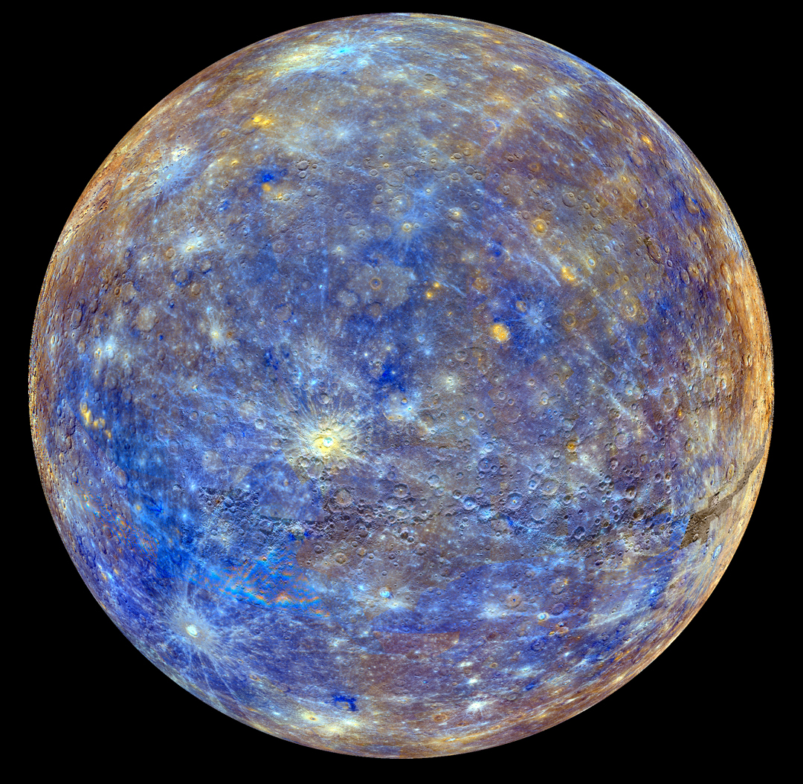
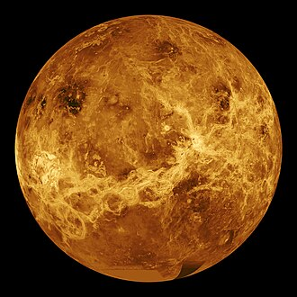
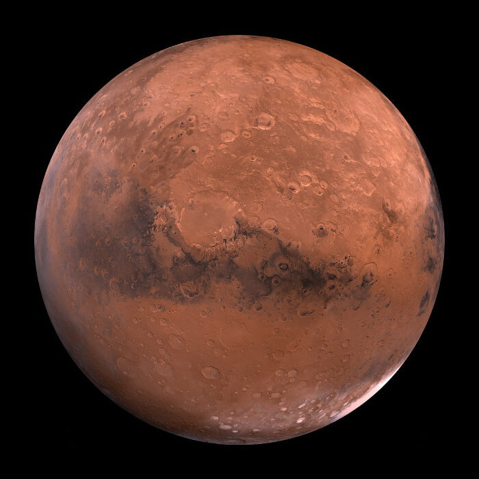
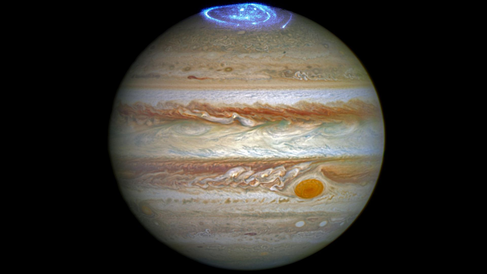
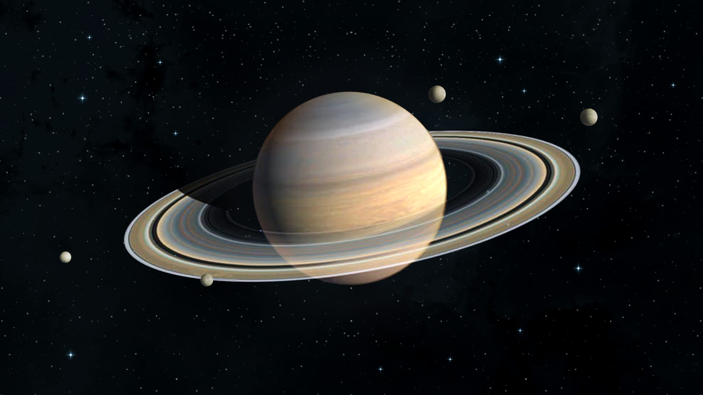
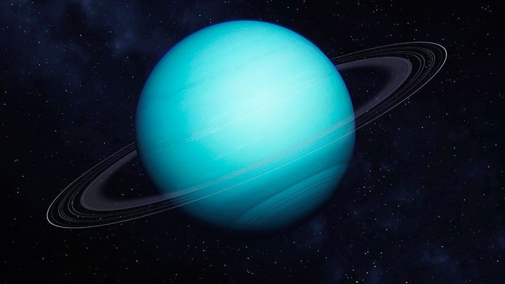
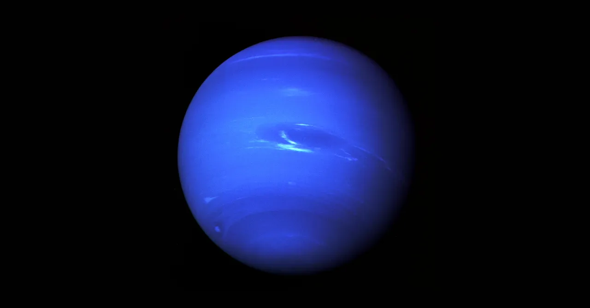

Our Solar System
The solar system contains eight planets orbiting the Sun, each with unique characteristics.
Some are rocky, while others are gas giants. These different planet types are even seperated by a physical barier
called the asteroid belt as seen in the image below divinding them into "inner" and "outer planets".


1. Mercury
The closest planet to the Sun. Can range between -290 and 800 °F in a day.

2. Venus
The hottest planet in the solar system (~900 °F). Rotates backwards than the rest of the planets.

3. Earth
The only known planet with life.

4. Mars
The famous red planet. Home to the largest volcano in the solar system (3x the size of mount everast)

5. Jupiter
The largest planet in the solar system, could fit all of the other planets inside it. Famous for its storm spot

6. Saturn
Known for its beautiful rings of ice and rock.

7. Uranus
An icy planet tilted on its side.

8. Neptune
A cold planet with strong winds. Winds often reach over 1100 mph.